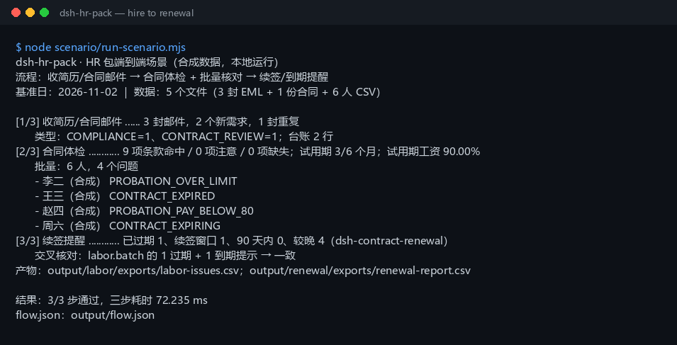

真实运行截图

上图是 node scenario/run-scenario.mjs 的真实输出，不是示意图（原始终端文本）。数据全部为 example.test / DEMO / （合成） 合成值。
这个包解决什么
一名候选人的简历邮件、合同邮件和 6 人合同台账，沿同一条链路走完；脚本把同一份合同和同一份员工 CSV 在三个插件之间传递，而不是三个样例各跑一遍。
它不替你做录用、纪律或法律判断。条款提示、试用期问题、到期提醒仍需人工复核；不是法律意见。
你需要准备什么
把文件放进仓库 04-build/dsh-hr-pack/scenario/data/ 对应目录，保持文件名（或同步改 runner 里的 DATA_FILES）。
| 输入 | 放在哪里 | 最少需要的内容 |
|---|---|---|
| 简历 / 合同邮件 | eml/ | From、To、Subject、Date、Message-ID、Thread-Id，空行后是正文 |
| 合同正文 | contract/labor-contract-DEMO.txt | 纯文本合同；本包不解析 PDF/DOCX/扫描件 |
| 员工合同 CSV | hr/employees.csv | employee,position,contract_start,contract_end,probation_months,monthly_salary,probation_salary |
日期用 YYYY-MM-DD；无固定期限写 无固定期限。附件名称、大小、SHA-256 由脚本从合同文件实时计算，EML 与盘上文件不会漂移。
三步操作
先运行同一条命令（脚本一次跑完）：
$ cd 04-build/dsh-hr-pack $ node scenario/run-scenario.mjs
第 1 步：收简历 / 合同邮件（dsh-legal-intake）
对应 [1/3] 段
[1/3] 收简历/合同邮件 ...... 3 封邮件，2 个新需求，1 封重复
类型：COMPLIANCE=1、CONTRACT_REVIEW=1；台账 2 行
3 封 EML 中，合同邮件重发件与原件使用同一个 Message-ID，被计为 1 封重复，不会重复建需求。新需求 2 个：简历邮件归为 COMPLIANCE，合同邮件归为 CONTRACT_REVIEW；台账写到 output/intake/exports/intake-ledger.xlsx。
第 2 步：合同体检 + 批量核对（dsh-labor-contract）
对应 [2/3] 段
[2/3] 合同体检 ............ 9 项条款命中 / 0 项注意 / 0 项缺失；试用期 3/6 个月；试用期工资 90.00%
批量：6 人，4 个问题
- 李二（合成） PROBATION_OVER_LIMIT
- 王三（合成） CONTRACT_EXPIRED
- 赵四（合成） PROBATION_PAY_BELOW_80
- 周六（合成） CONTRACT_EXPIRING
合同期 36 个月，试用期 3 个月 ≤ 上限 6 个月；试用期工资 10800 / 12000 = 90.00% ≥ 80%；竞业限制 2 年且有按月补偿。批量 6 人中：1 个试用期超限（2 年合同 3 个月试用期）、1 个已到期 247 天、1 个试用期工资 79.99%、1 个 74 天后到期。问题清单写到 output/labor/exports/labor-issues.csv。
第 3 步：续签 / 到期提醒（dsh-contract-renewal）
对应 [3/3] 段
[3/3] 续签提醒 ............ 已过期 1、续签窗口 1、90 天内 0、较晚 4（dsh-contract-renewal）
交叉核对：labor.batch 的 1 过期 + 1 到期提示 → 一致
6 份合同登记进 output/renewal/contracts.jsonl，按 2026-11-02 的 90 天窗口分组：王三（合成）已过期 247 天；周六（合成）在续签窗口内，还剩 74 天；其余 4 份较晚。续签报表写到 output/renewal/exports/renewal-report.csv，并与 labor.batch 的到期提示交叉核对。
结果文件
| 路径 | 内容 |
|---|---|
output/flow.json | 本次运行的完整链路：每步输入、输出、耗时、状态、产物清单 |
expected/flow.json | 金标；测试剔除时间字段后逐字段比对 |
output/intake/exports/intake-ledger.xlsx | 收件台账，2 行 |
output/labor/exports/labor-issues.csv | 合同批量问题，4 行 |
output/renewal/contracts.jsonl | 续签登记表，6 条 |
output/renewal/exports/renewal-report.csv | 续签/到期报表，6 行 |
output/ 每次运行重建，已在 .gitignore 中忽略；金标在 expected/flow.json，不要被覆盖。
出错怎么办
| 报错 | 通常原因 | 下一步 |
|---|---|---|
E_LEGAL_EML_INVALID | EML 缺 Subject/From，或头部不是标准 Name: value | 对照样例补头；正文前保留一个空行 |
E_LABOR_TEXT_EMPTY | 合同正文为空，或从 PDF 只复制到图片 | 确认传入纯文本正文；扫描件先 OCR |
E_LABOR_CSV_ROW | 员工 CSV 缺列、列数不一致、试用期不是非负整数、金额不是正数 | 对照 scenario/data/hr/employees.csv 的表头与列数 |
E_LABOR_DATE_INVALID | 日期写成 2026/01/01、2026-1-1 或 2 月 30 日 | 统一 YYYY-MM-DD；无固定期限写“无固定期限” |
E_CONTRACT_DUPLICATE | 同一合同编号登记了两次 | 换版本号（如 -v2），不要重复登记 |
E_CONTRACT_DATE_INVALID / E_CONTRACT_DATE_RANGE | 续签台账日期不合法或起止写反 | 检查 contract_start / contract_end |
E_CONTRACT_PATH_INVALID | 续签 CSV 文件名不安全 | 只传 [A-Za-z0-9._-] 的文件名 |
| 其他错误 | lib/ 未构建、Node 版本不对或临时目录权限 | 先在各包跑 pnpm build；保留完整报错和 output/flow.json，不要删原始数据 |
三个插件
仓库内完整中文说明：04-build/dsh-hr-pack/README-zh.md；英文简版：README.md。运行与测试命令：
$ node scenario/run-scenario.mjs $ node --test test/*.test.mjs $ node scenario/run-scenario.mjs --write-expected # 有意改动输出后重建金标